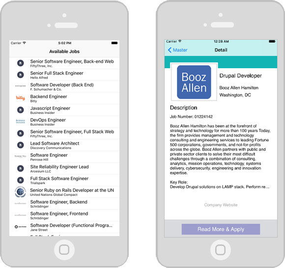

My Work
Here are some projects that I particularly enjoyed:
GoFar

A traveling and booking app built for a class group project. This data-driven app was built using Microsoft Visual Studio (ASP.NET) and LocalDB. My main role was to lead in the UI design and styling of the overall site. Website is responsive using the Bootstrap framework.
JobFinder

A job finding iOS app built with Xcode and Swift using MVC design. This app uses the Github Jobs API to pull JSON data, serialize the data, and then show available jobs in a certain location. You can then choose to pull up more details about the job posting and find out how to apply.